DoctorDO: where did that update actually come from?
If you manage Windows updates and Win32 apps at any scale, someone has asked you “Is peering working?” The honest answer is usually “probably”, followed by a look at Activity Monitor on the nearest laptop.
Delivery Optimization pulls content from the Microsoft CDN, from peers and from a Connected Cache server if you have one, in parallel, a megabyte at a time. When it works, you save a lot of bandwidth. When it doesn’t, it falls back to the CDN without complaint, which is fine for the user and no help at all to whoever has to work out why.
This very fact that admins don’t always know what to do to ensure is Delivery Optimization functioning is why I have built some thing called DoctorDO. The aim is clear, help admins understand all of the settings applied to the device, ensure it can reach the required endpoints, and visualise where data is coming from. You can run the PowerShell module on any device today, free and without Azure.
The full solution is in private preview, and I’ll be clear which bits are which.
Why Delivery Optimization is hard to see into
Microsoft gives you a few ways in, and each gets you part of the way.
On a single device there’s Activity Monitor, and cmdlets such as `Get-DeliveryOptimizationStatus` and `Get-DeliveryOptimizationPerfSnapThisMonth` ([Monitor Delivery Optimization](https://learn.microsoft.com/windows/deployment/do/waas-delivery-optimization-monitor)). They tell you how many bytes came from where. They don’t tell you why the peer column is zero.
Microsoft’s own DeliveryOptimizationTroubleshooter script (https://learn.microsoft.com/windows/deployment/do/delivery-optimization-troubleshoot), is a good first check on a device, with health checks for peering and Connected Cache and a log bundle you can collect. What it doesn’t give you is a readable report to hand to someone, or a view across the estate.
Across the estate there’s the Delivery Optimization report in https://learn.microsoft.com/windows/deployment/update/wufb-reports-do, which gives you a 28-day rolling picture by content type. It’s good for “how are we doing”, less so for “which site is broken, and what do I change”.
And Intune will happily tell you your Delivery Optimization profile applied. It has no opinion on whether a firewall policy or Wi-Fi client isolation means that profile achieves nothing. The answer is spread across the DO logs, the firewall, the registry, DHCP options and the network, and nobody has time to stitch that together by hand.
What DoctorDO answers
DoctorDO reads what Windows already records about DO and answers two questions per device: where did the bytes come from, and why didn’t more come from somewhere local?
It works to a few rules. Findings come from deterministic rules, not AI guesses, and every recommendation cites the evidence the device reported. An error code DoctorDO doesn’t recognise is shown as unknown, not given a plausible-sounding explanation. Anything it couldn’t collect is shown as not collected, never quietly counted as a pass. It also never changes anything: the module touches no Delivery Optimization, firewall, proxy or service setting.
One thing to know before you read a report: **delivery efficiency** in DoctorDO counts bytes from LAN peers, Group peers and your own Connected Cache. Since collector 1.2.0, an ISP’s Connected Cache isn’t counted as local, because those bytes still cross your internet link (WUfB reports doesn’t count them either).
Run it on one device, right now
The PowerShell module is on the PowerShell Gallery – https://www.powershellgallery.com/packages/DoctorDO. It works on Windows 10 2004 or Windows 11 and later, under Windows PowerShell 5.1 or PowerShell 7. The `DoctorDO` package is a small name module that installs `DoctorDO.Collector`, which holds the commands.
From an elevated PowerShell window:
Install-Module -Name DoctorDO -Scope CurrentUser
A report of this device, written to your temp folder and opened in your browser
New-DoctorDODeviceReport
One you can share: no host name or device IDs, as a page and a PDF
New-DoctorDODeviceReport -OutputPath C:\Temp -Anonymise -Format Html,Pdf
Just the connectivity checks, in the console
Test-DOConnectivity
Test-DOConnectivity -Detailed
On a fresh Windows PowerShell 5.1 box, `Install-Module` will ask to install the NuGet provider and whether to trust PSGallery; say yes to both. If the execution policy is still the Windows client default (Restricted), the module won’t load. You can temporarily bypass the restrictions by using the following command;
PowerShell.exe -executionpolicy bypass
Code Signing
The module isn’t code-signed yet, so if you enforce AllSigned through Group Policy, or App Control for Business with script enforcement, that won’t help, and you’ll need to re-sign the module with your own certificate. The collector README covers how.
Running Elevated
Elevation matters. Without it, the module can’t read the DO logs or some settings, and the report lists what it couldn’t read instead of guessing. You’ll see that in a moment.
The output is a single HTML file that makes no network requests, so you can attach it to a ticket or email it to someone who’s never heard of DoctorDO. Nothing leaves the device unless you send it.
`-Anonymise` strips the host name, the Entra, tenant and Intune device IDs, the ConfigMgr site code and the AD site, with hashes salted per report so they can’t be matched to your fleet. Subnets and your Connected Cache host stay, because the diagnosis depends on them. `Invoke-DoctorDOCollector -WhatIfRedaction` prints the full redaction profile without collecting anything.
A worked example: my own laptop
Here’s a real run from my own XPS, collector 1.2.1, deliberately *not* elevated, with `-Anonymise`. It took 63 seconds and wrote a 927 KB report. Fifteen facts weren’t collected because I wasn’t elevated, and a banner at the top says as much.
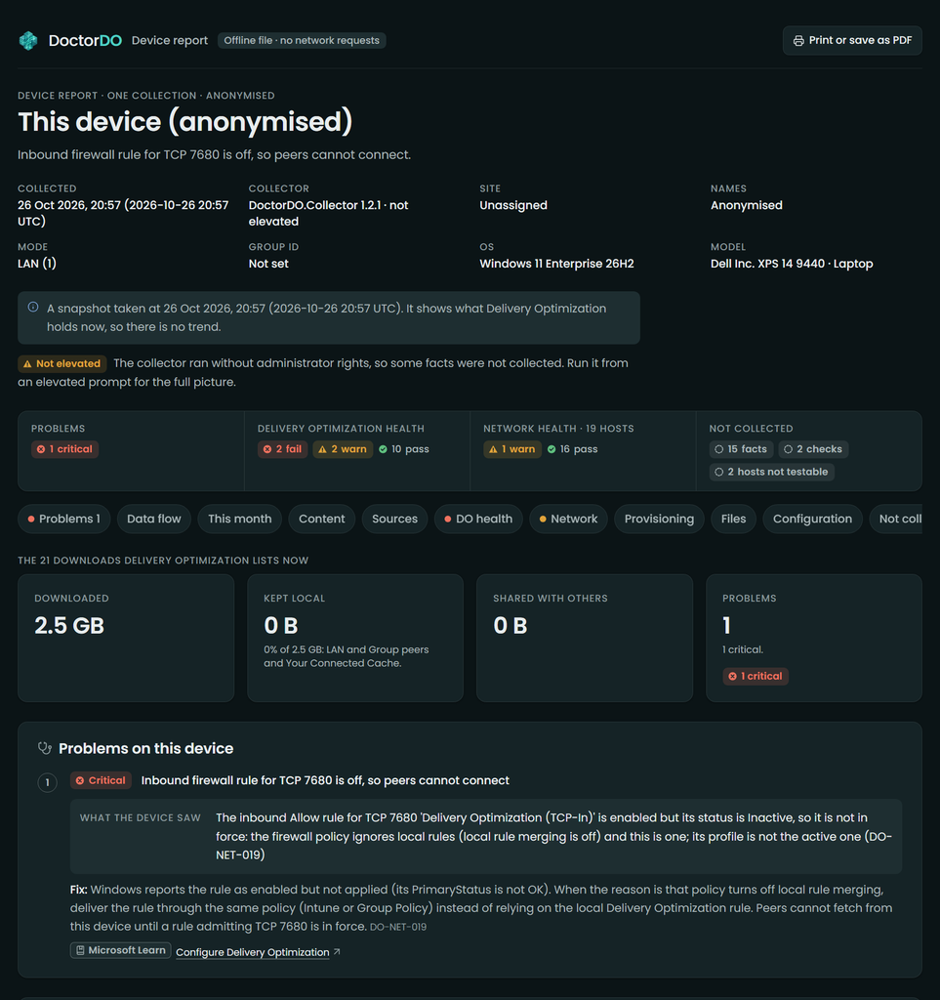
*The top of the device report. One critical problem, and the evidence for it, before you scroll.*
The headline is the bit I’d have spent an afternoon finding by hand: **inbound firewall rule for TCP 7680 is off, so peers cannot connect.**
The DO service registers and opens TCP 7680 itself (https://learn.microsoft.com/windows/deployment/do/delivery-optimization-configure). The rule was there. It was even enabled.
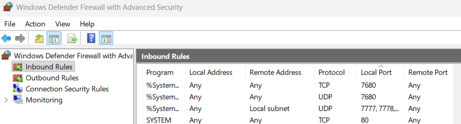
But its status was Inactive, and the check gives two reasons. The firewall policy has local rule merging turned off, and “Delivery Optimization (TCP-In)” is a local rule. And the rule’s profile isn’t the one that’s active. The Windows Firewall rules (https://learn.microsoft.com/windows/security/operating-system-security/network-security/windows-firewall/rules#local-policy-merge-and-application-rules) on Learn spells out the first: with local policy merge disabled, any app that needs inbound connectivity needs its rule deployed centrally. DO is one of those apps, and nothing in Intune will tell you.
The fix the report gives is to stop relying on the local rule and deliver an inbound allow rule for TCP 7680 from the same place that turned merging off. If that’s Intune, add it to a Windows Firewall Rules profile under endpoint security firewall policy (https://learn.microsoft.com/intune/device-configuration/endpoint-security/firewall); if it’s Group Policy, add it to that GPO.
Scroll down and the data flow shows the effect:
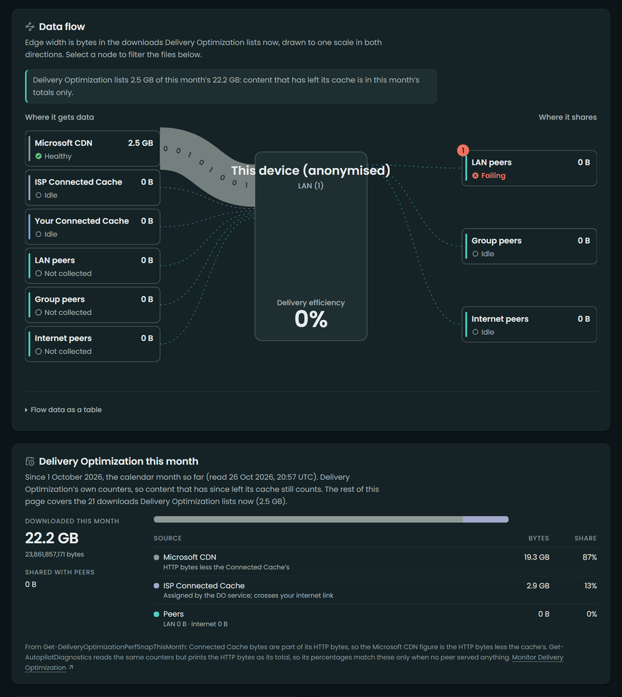
*Every byte DO still lists came from the CDN. This month’s counters tell the same story over 22.2 GB.*
For the 21 downloads DO still lists, 2.5 GB came in and 0 B was kept local: 0% efficiency. The monthly counters, which include content that has aged out of the cache, say 22.2 GB, 87% from the CDN, 13% from an ISP’s Connected Cache (not counted as local, as above), nothing from peers. And the peer sources on the download side say “Not collected” instead of zero, because I wasn’t elevated and the report won’t guess.
`Test-DOConnectivity` gives the same diagnosis in the console, which is handy over a remote session:
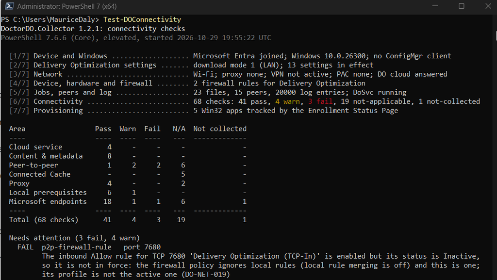
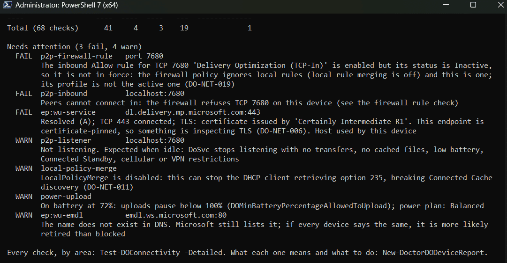
The two failures are the firewall story. As for the warnings: DoSvc not listening on 7680 isn’t treated as a fault, because the service stops listening when it’s idle, as the Delivery Optimization FAQ (https://learn.microsoft.com/windows/deployment/do/waas-delivery-optimization-faq) describes.
The LocalPolicyMerge warning is the sneaky one: with merging off, the DHCP client can fail to pick up option 235, so the same policy can quietly break Connected Cache discovery as well. And the DNS warning for `emdl.ws.microsoft.com` is DoctorDO declining to accuse your firewall of blocking a name Microsoft may simply have retired. I’d rather a tool admit that than send someone off to raise a change request against the network team.
Through Intune with Collect diagnostics, no Azure needed
When you want reports from a problem site without asking anyone to run PowerShell, there’s a route that uses nothing but Intune. Collect diagnostics (https://learn.microsoft.com/intune/device-management/actions/collect-diagnostics) gathers everything in `%ProgramData%\Microsoft\IntuneManagementExtension\Logs` into the zip you download from the admin center. So if a remediation writes the DoctorDO report into that folder, it comes back with the device’s other logs.
The detection script checks for a report from the last 24 hours:
# Detect-DoctorDOReport.ps1: is there a DoctorDO report from the last 24 hours?
$report = Join-Path $env:ProgramData 'Microsoft\IntuneManagementExtension\Logs\DoctorDO-DeviceReport.html'
$file = Get-Item -LiteralPath $report -ErrorAction SilentlyContinue
if ($file -and $file.LastWriteTime -gt (Get-Date).AddHours(-24))
{
Write-Output "Report present: $($file.LastWriteTime)"; exit 0
}
Write-Output 'No DoctorDO report from the last 24 hours'
exit 1And the remediation installs the module if needed and writes the report with a fixed name, so each run replaces the last one:
# Remediate-DoctorDOReport.ps1: write a fresh report where Collect diagnostics looks.
# Runs as SYSTEM. The report is never opened here (-NoOpen says so plainly).
$ErrorActionPreference = 'Stop'
$logs = Join-Path $env:ProgramData 'Microsoft\IntuneManagementExtension\Logs'
try {
# -FileName needs version 0.7.0 or later.
if (-not (Get-Module -ListAvailable -Name DoctorDO.Collector | Where-Object { $_.Version -ge [version]'0.7.0' })) {
# From the PowerShell Gallery; or deploy it as a Win32 app instead.
Install-PackageProvider -Name NuGet -MinimumVersion 2.8.5.201 -Force | Out-Null
Install-Module -Name DoctorDO.Collector -MinimumVersion 0.7.0 -Scope AllUsers -Force
}
Import-Module -Name DoctorDO.Collector -MinimumVersion 0.7.0
# One fixed name, so each run replaces the last report and the folder keeps one.
$r = New-DoctorDODeviceReport -OutputPath $logs -FileName 'DoctorDO-DeviceReport' -Format Html -NoOpen
Write-Output ('Report written: {0} ({1:N0} KB)' -f (Split-Path -Path $r.Path -Leaf), ($r.Bytes / 1KB))
exit 0
} catch {
Write-Output "DoctorDO report failed: $($_.Exception.Message)"
exit 1
}Add both as a script package under **Devices > Scripts and remediations**, with “Run this script using the logged-on credentials” set to No, “Enforce script signature check” set to No (unless you sign the scripts yourself) and “Run script in 64-bit PowerShell” set to Yes. Schedule it Daily to match the 24-hour look-back. I’m still testing this route across more estates, so treat the scripts as a starting point: try them on one device with its **Run remediation (preview)** action, then a small group, before going wider.
When you want a report, run **Collect diagnostics** on the device (or in bulk, up to 25 at a time), download the zip from **Monitor > Device diagnostics** and open `DoctorDO-DeviceReport.html` from the IME logs.
Remediations (https://learn.microsoft.com/intune/device-management/tools/deploy-remediations) need Entra-joined or hybrid-joined devices, and users licensed for Windows Enterprise E3 or E5, Education A3 or A5, or VDA. Collect diagnostics only works on corporate-owned Windows devices and needs Help Desk Operator or a custom role with Remote tasks/Collect diagnostics. These reports aren’t anonymised by default, and Microsoft says its personnel may access device diagnostics, so add `-Anonymise` to the report line if the reports shouldn’t name the device.
The full solution: every device, every site, in your own Azure
Everything above is available today. The full solution is in **private preview**.
It deploys into your own Azure subscription: a Static Web App for the portal, Function Apps, Service Bus, storage, PostgreSQL, Key Vault and monitoring. Sign-in is Entra ID, your tenant only. An Intune remediation installs the module and runs it daily as SYSTEM, and each device signs its report with its Entra device certificate key. Graph access is read-only: `Device.Read.All` and `DeviceManagementManagedDevices.Read.All`.
These screenshots are from the live demo at https://www.doctor-do.com: ContosoAI, a fictitious company with 46,000 devices at 41 sites in 16 countries, plus remote workers.
The DoctorDO portal Overview for the ContosoAI demo tenant shows 49% delivery efficiency against a 60% goal, 328.5 TB kept local of 664.1 TB downloaded, 2 critical fixes and 10 kinds of device problem.
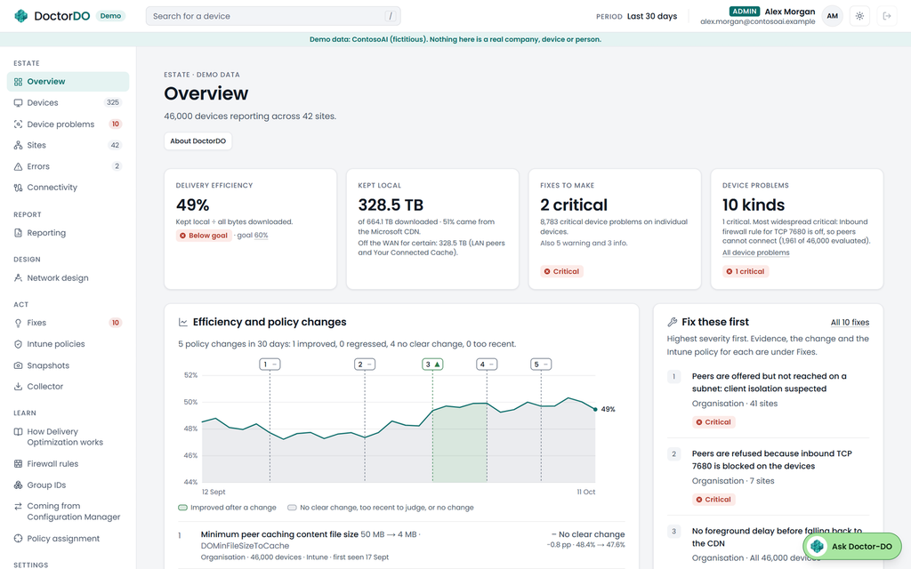
*The Overview: where the estate’s bytes came from, against the goal you set.*
Most of the Overview tiles link through to the detail. The Ask Doctor-DO button you’ll spot is an optional briefing from your own Azure OpenAI deployment, off unless you turn it on. It summarises the findings; it doesn’t make them, and it never sees device names, addresses or site names.
Below the tiles, the trend marks each DO policy change and compares the seven days either side.
A trend chart of delivery efficiency over 30 days with five policy changes marked; one change, a Connected Cache host set for Singapore, is marked Improved, and the others No clear change.
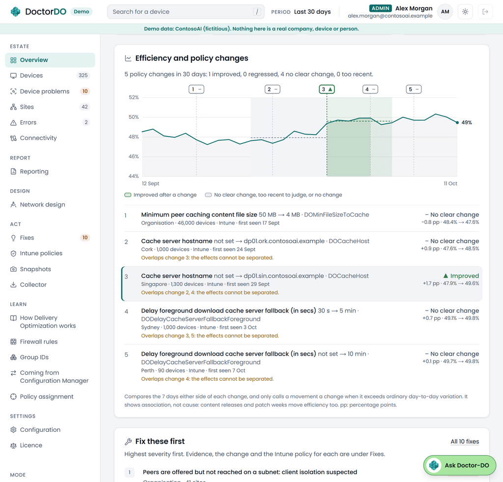
*Policy changes on the trend. It only calls something an improvement when the movement beats day-to-day variation.*
Four of the five changes say “No clear change”, and the page states that it shows association, not cause: Patch Tuesday moves efficiency too. The topology view lays out every site by region, shaded against your goal. In this example it shows a map of every site grouped by region, each site card shaded red or green against the 60% goal with device counts and flags.
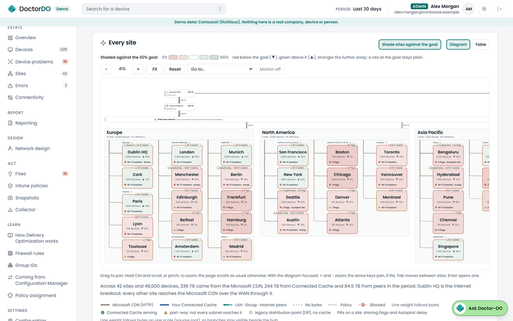
*The estate map: every site, shaded against a 60% goal.*
Open a site and you get its subnets. This is usually where it gets interesting.
The Dublin HQ site panel showing how its subnets share: one subnet of 2,778 devices flagged “blocked, isolation suspected” with 71 of 22,224 offered peers reached, while the other subnets reach most of their peers.
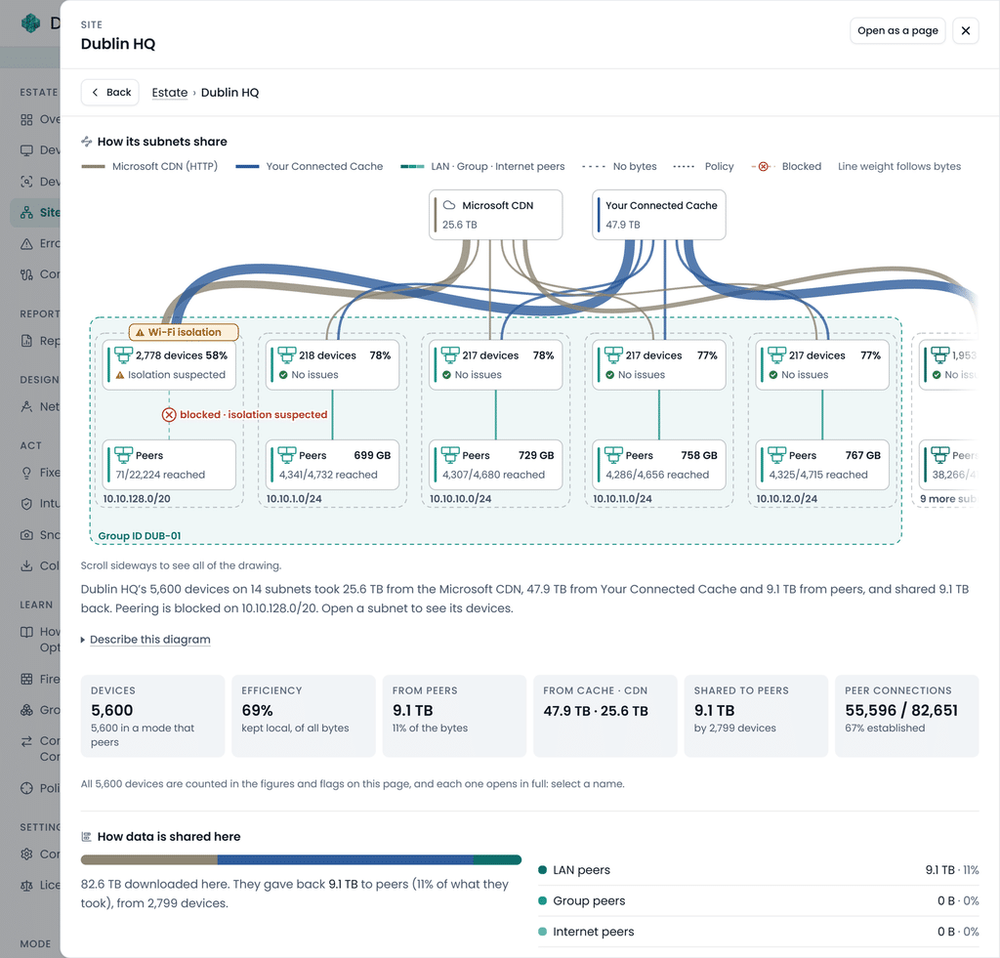
*One subnet at Dublin HQ reaches 71 of 22,224 offered peers. Its neighbours reach most of theirs.*
Their firewalls let DO in, the service offers them peers, and the connections still fail. That points at something between the devices, typically wireless client isolation, and DoctorDO raises it once for the subnet, not once per device.
Each device gets the same data flow as my local report, over the whole period:
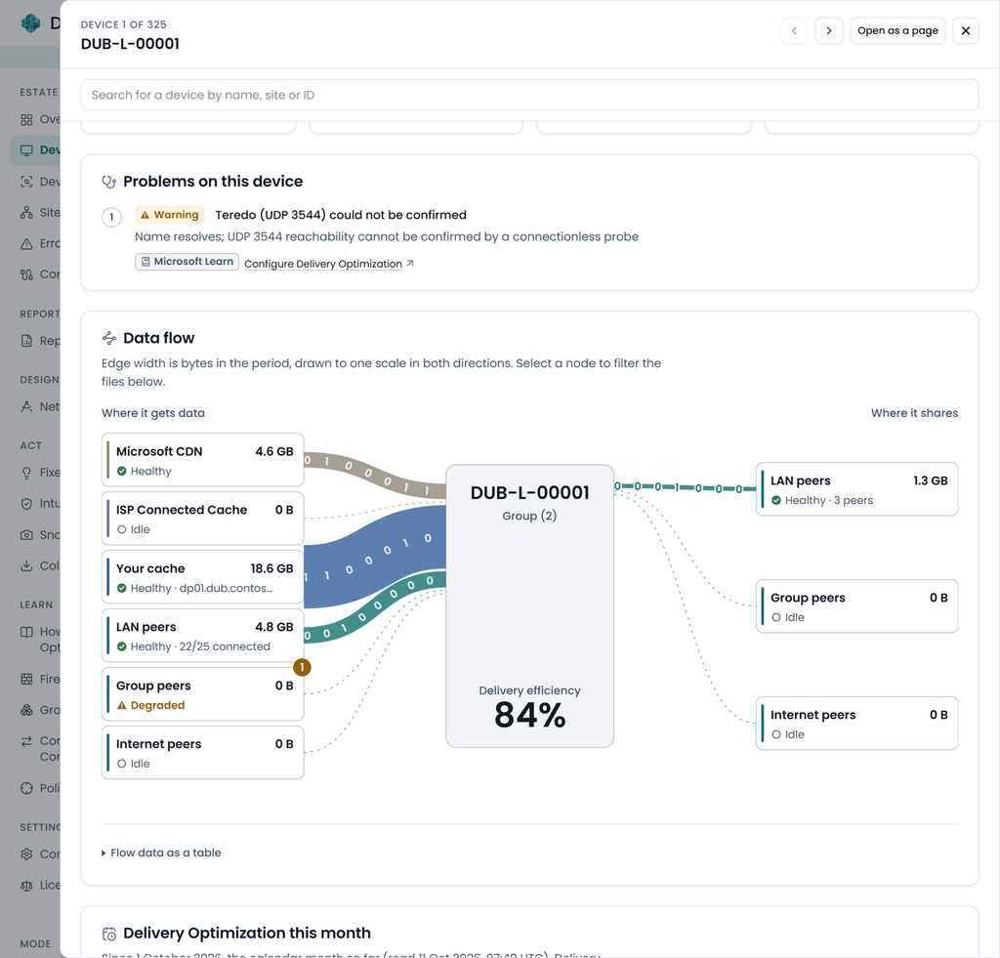
*A healthy device for comparison: 84% from your own cache and LAN peers.*
Then there’s Fixes: each finding with its scope, evidence, the exact change and the Microsoft source;
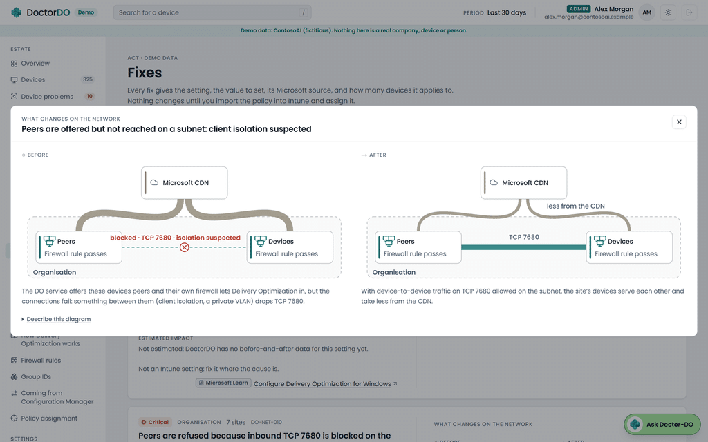
*A finding with its evidence, the change and a before-and-after picture of the network.*
Where the fix is a DO setting, you get a settings catalog JSON file to https://learn.microsoft.com/intune/device-configuration/settings-catalog/#import-and-export-a-profile and assign yourself; DoctorDO never writes to Intune. Where it isn’t, like the client isolation one above, it says so and points at the cause.
Network design starts from what devices report. Add a Connected Cache (https://learn.microsoft.com/windows/deployment/do/mcc-ent-edu-overview) server at a site, or change peering, and it models the effect on CDN traffic and your slowest Patch Tuesday wave;
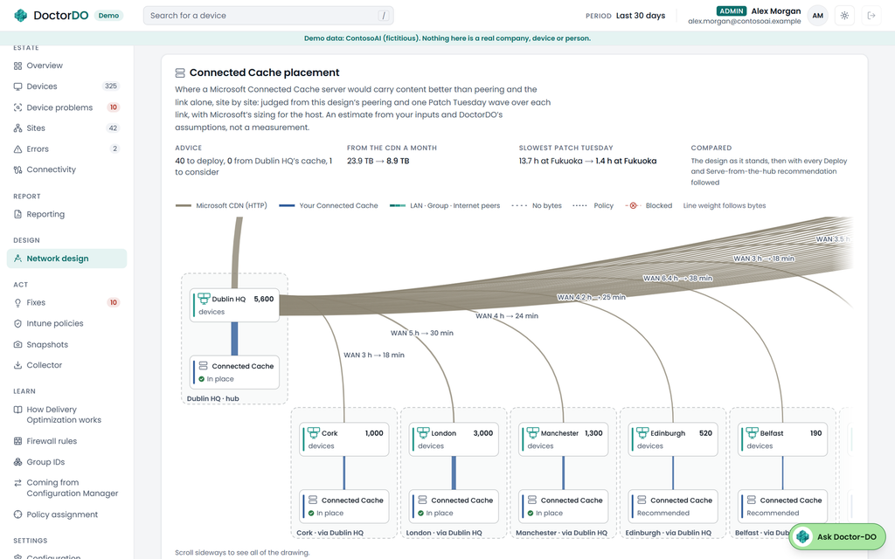
*Connected Cache placement, site by site. An estimate from your inputs, labelled as one.*
Reporting puts DoctorDO’s figures next to WUfB reports if you connect that workspace, and explains the gap. It saves as a PDF for anyone who wants it in an email;
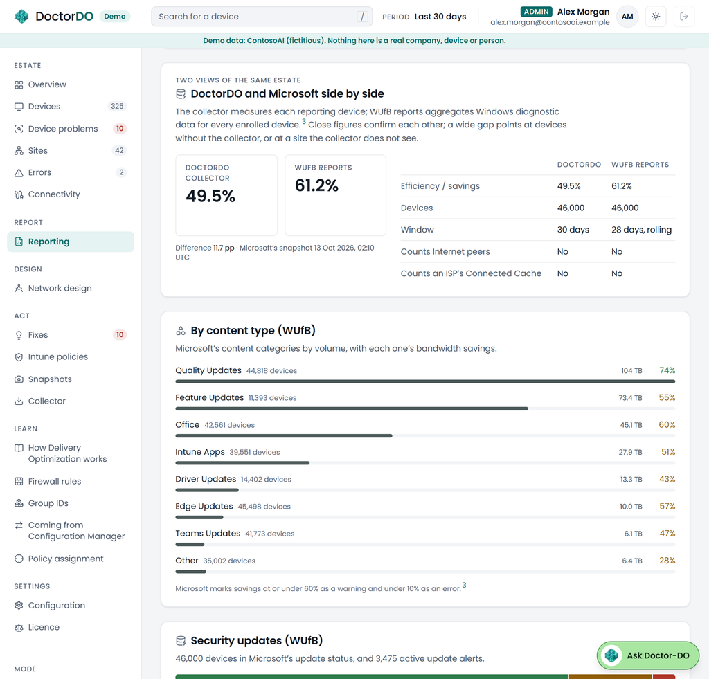
*Two views of the same estate, with the differences between them spelled out.*
Connectivity shows the endpoint, port and proxy checks from every device, and where devices that ought to agree don’t. When half a site passes “outbound to peers” and half fails, their subnets usually hold the answer;
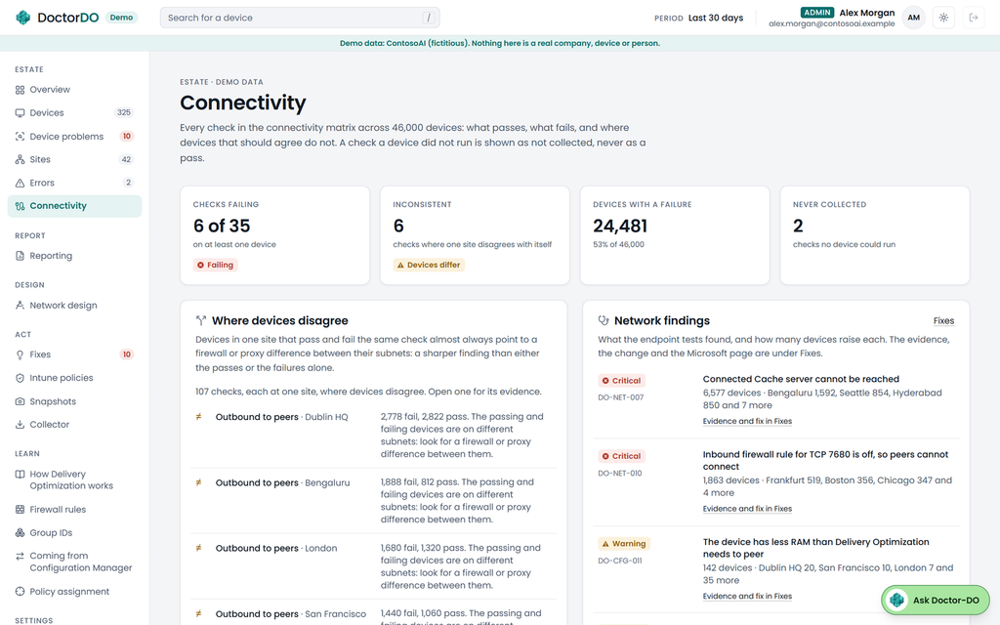
*Connectivity across the estate. The same symptom as my laptop, peers refused on TCP 7680, on 1,863 demo devices.*
Privacy, and what stays in your tenant
The local module sends nothing. In the full solution everything lives in your subscription, and the DoctorDO project receives no device data.
Fleet runs anonymise by default: the host name goes, and things like the gateway and group ID are hashed. The Entra device, tenant and Intune IDs still travel, because ingest has to prove which enrolled device is sending, and subnets and AD sites stay readable, because that’s what the site analysis is built on. The device’s serial number is never sent, only a salted hash. The data page (https://www.doctor-do.com/data/) goes through what the collector reads, what it sends and what it hashes or leaves out. Send it to your DPO before you start.
Licence
DoctorDO is source-available under the PolyForm Shield License 1.0.0: free to use, change and share, except to build a competing product. The Intune scripts in `collector/intune` are MIT.
Links
If the module tells you something you didn’t expect, or something wrong, tell me on LinkedIn (https://www.linkedin.com/in/mauricedaly/), or raise an issue in GitHub.